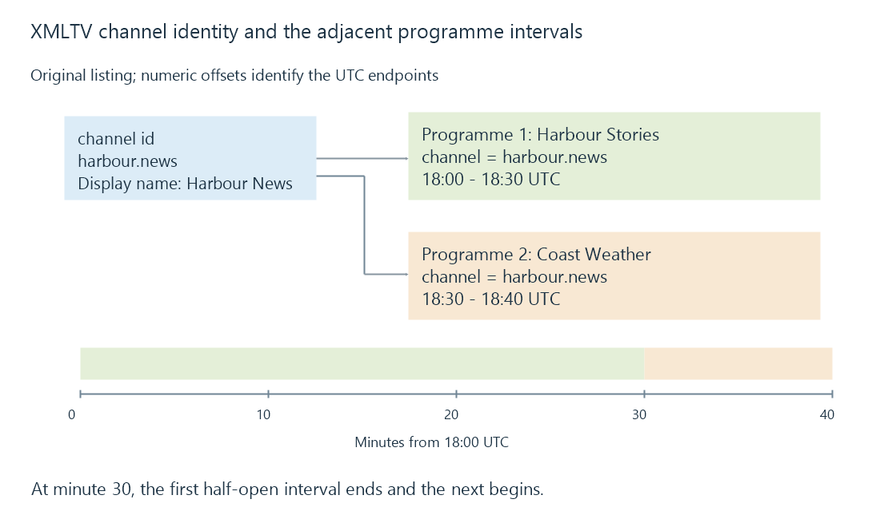

XMLTV listings: channels, programmes and time
XMLTV represents channel identities and programme listings in XML, with format-specific timestamps and episode-number systems that a guide importer must interpret.
An XMLTV file contains television listings. It gives a guide importer channel identifiers, programme times and descriptive fields; it does not contain the television video.
A file can be downloaded successfully, parse as XML and still produce the wrong guide. The useful checks extend from XML structure to channel references, timestamp meaning and the particular metadata fields the importer uses.
A small complete listing
This original document describes one fictional channel and two adjacent airings:
<?xml version="1.0" encoding="UTF-8"?>
<tv generator-info-name="Learn example">
<channel id="harbour.news">
<display-name>Harbour News</display-name>
</channel>
<programme start="20261012180000 +0000"
stop="20261012183000 +0000"
channel="harbour.news">
<title lang="en">Harbour Stories</title>
<sub-title lang="en">The First Crossing</sub-title>
<episode-num system="xmltv_ns">0.0.</episode-num>
</programme>
<programme start="20261012183000 +0000"
stop="20261012184000 +0000"
channel="harbour.news">
<title lang="en">Coast Weather</title>
</programme>
</tv>
Both programme elements refer to the channel’s id. Their position in the file does not give them that association; the identifier does.
The display name is a human label. Renaming it while retaining harbour.news need not change the identity. Changing the ID requires the programme references and any relevant source-to-guide mapping to remain consistent.
XML validity does not establish a correct join
The XMLTV DTD gives programme start and channel attributes required status; stop is optional. It describes the permitted element arrangement, including channel elements before programmes.
Its channel-reference rule is described in comments rather than enforced as a DTD ID/IDREF relationship. A structural validator therefore cannot prove that every programme has the intended station.
For the fixture, three semantic checks add useful evidence:
- The declared channel ID is unique.
- Both programme references match that ID.
- The first stop equals the second start after time conversion.
Now change only the second programme’s channel to harbour.weather. The document can remain structurally valid while that entry no longer belongs to the declared channel. The importer might accept an undeclared channel reference according to its own policy, but it cannot infer that the author meant Harbour News.

Emby associates imported guide stations with source channels through channel mapping. A matching XMLTV ID is useful within that process; it is not the media URL itself.
The timestamp is not a local display string
In 20261012180000 +0000, the date/time portion is 12 October 2026 at 18:00, with a zero UTC offset. The XMLTV convention assumes UTC when no explicit time zone is supplied. Explicit numeric offsets make the intended interpretation easier to inspect.
Thus these values describe the same instant:
| XMLTV timestamp | UTC instant |
|---|---|
20261012180000 +0000 |
18:00 UTC |
20261012200000 +0200 |
18:00 UTC |
Displaying 18:00 UTC in a plus-two-hour zone produces 20:00 local time. Treating the original digits as local time first and then applying another conversion shifts the event incorrectly.
XMLTV allows reduced precision and some named zone forms. Those permissions do not guarantee identical acceptance by every importer. This example deliberately uses full date/time values and explicit numeric offsets.
A missing stop also needs interpretation. Inferring it from the next entry can be convenient, but a missing or overlapping next entry changes that inference. The listed content length is another field; it is not automatically the exact transmission interval including breaks.
Episode numbers carry a numbering system
The fixture’s xmltv_ns value 0.0. means season one, episode one, with the part unspecified. The numeric positions use zero-based indexing.
Compare:
<episode-num system="xmltv_ns">1.4.</episode-num>
<episode-num system="onscreen">S02E05</episode-num>
Here the first representation denotes season two, episode five. The second is presentation text in the onscreen system. They can describe the same episode, but the digits cannot be parsed with the same indexing rule.
A missing component is unknown rather than zero. An unspecified episode must not silently become episode one. Programme identifiers explains why episode identity also differs from an airing ID.
Fields such as episode identity, repeat/new indicators and descriptions improve series matching when the source and importer support them. A provider can omit those fields even while supplying a valid schedule.
Diagnose the first wrong interpretation
Start with an actual affected airing: its channel reference, original start/stop, interpreted UTC interval and final station association. These observations show whether the discrepancy began in the file, time conversion or mapping.
A global time shift can hide one symptom while moving correctly interpreted events as well. Replacing every channel display name similarly leaves an incorrect reference key untouched.
See Also
- Electronic programme guides
- Extended M3U channel lists
- Programme identifiers: airings, episodes and series
- Guide time zones and clock changes